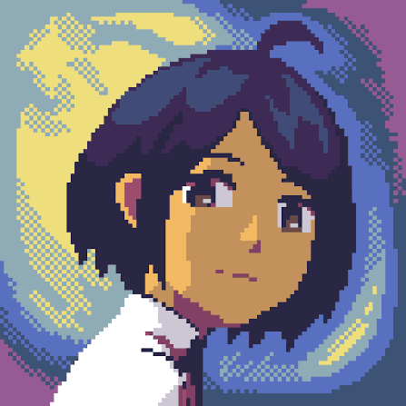
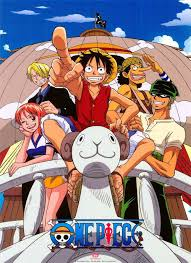
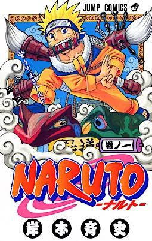
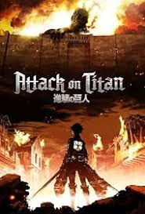
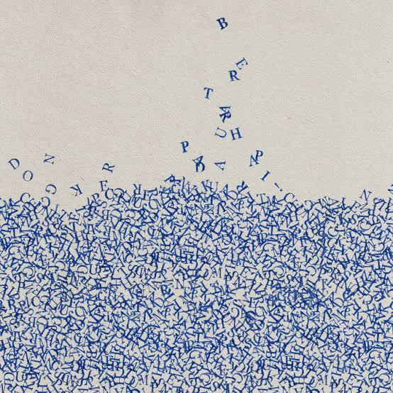
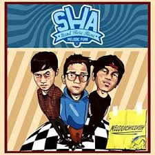

Favorit DZAKI
Game
Pencipta: Toby Fox
Pencipta: Robert Topala (RobTop)
Pencipta: Bandai Namco Studios

A Space for the UnboundPencipta: Mojiken Studio
Anime

One PiecePencipta: Eiichiro Oda

NarutoPencipta: Masashi Kishimoto

Attack on TitanPencipta: Hajime Isayama
Pencipta: Kōhei Horikoshi
Musik Favorit DZAKI

10 Foto Rahasia DZAKI
Lagu Easter Egg

Julukan: Si Paling Telat
Riwayat
dikenal sebagai orang yang ingin selalu menjandi orang lebih baik. entah itu beneran atau mitos
The Founder
Kutipan
"Hidup bebas seperti burung tanpa tuan"
Data Singkat
| Jabatan | progammer katanya |
| Hobi | Bikin proyek tak berbuah hasil |
| Tingkat kocak | 9/10 |